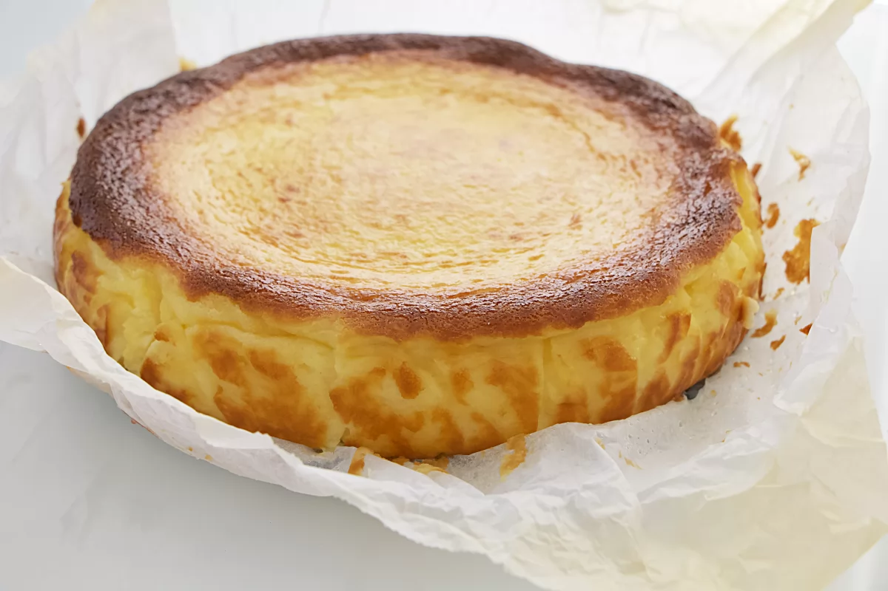

Receta de pastel de queso
Enlace a la pagina web

Como elaborar Link
Ingredientes
- 570 g de queso crema (tipo Philadelphia)
- 4 huevos
- 230 g de azúcar
- 10 g de harina
- 285 ml de nata (35% materia grasa)
Como elaborar
- Precalentamos el horno a 200 ºC, ponemos en un bol el queso crema y añadimos los huevos de uno en uno.
- Removemos e integramos la mezcla.
- Añadimos el azúcar.
- Añadimos la harina y de nuevo integramos siempre con unas varillas.
- Finalmente, añadimos la nata e integramos de nuevo.
- Forramos un molde con papel vegetal humedecido.
- Vertemos la mezcla en el molde con el papel.
- Horneamos a 200 ºC durante 40 minutos
- Retiramos la tarta de queso La Viña del horno, la dejamos atemperar para que adquiera la textura adecuada y la servimos.